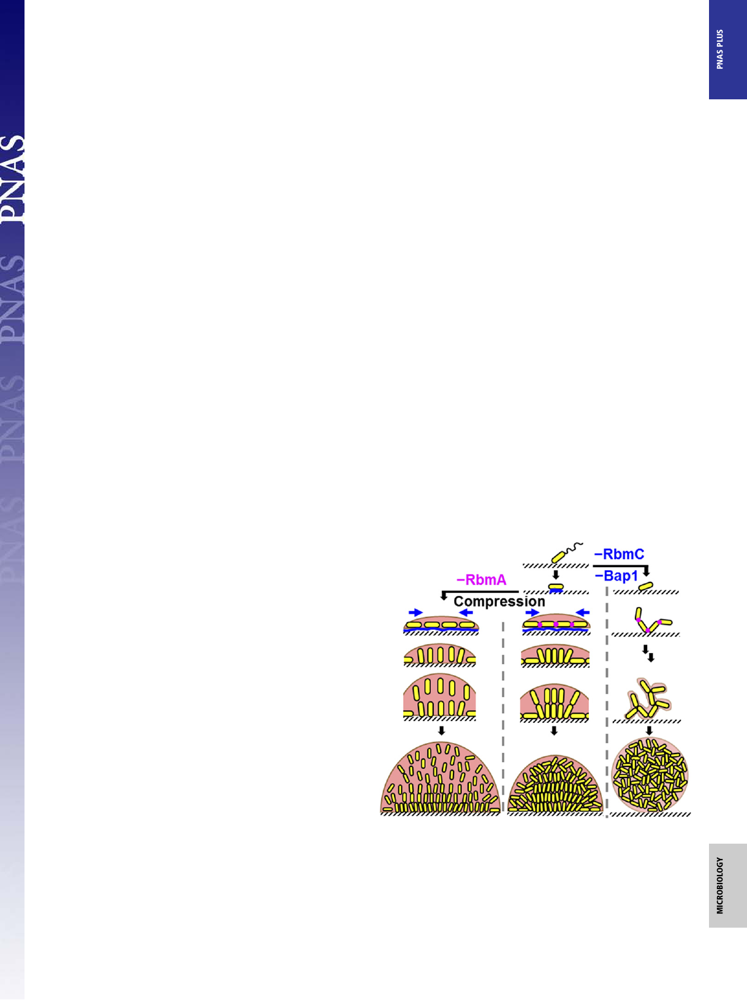

from the substrate, quantitatively shown in Fig. 3B by the ϕ plot.
We note that degradation or down-regulation of RbmA is not
responsible for the ordered packing in the parent (Fig. S6). The
time evolution of the ΔrbmA mutant biofilm cluster development
is shown in Fig. 3C and Movies S7 and S8. Following the re-
orientation transition in the bottom layer of cells, the ΔrbmA mutant
“explodes” into the third dimension insofar as newly born daughter
cells immediately move away from the substrate, maintaining their
vertical orientation and leaving behind the surface-attached mother
cells. The mature ΔrbmA mutant biofilm hence harbors a much
larger region of vertically oriented cells than the parent, as char-
acterized by high local ez (Fig. 3 B and D).
We suggest that the absence of cell-to-cell adhesion in the
ΔrbmA mutant allows biofilm expansion mediated by the poly-
mer matrix. Specifically, subsequent to the reorientation events
at the surface, the polymer matrix is able to fill the spaces be-
tween ΔrbmA mother and daughter cells and, in so doing, to
carry cells upward, away from the surface. This transport process
underpins the dramatic contrast in Vcell between the ΔrbmA
mutant and the parent strain. Whereas in the parent Rg strain,
the cluster becomes more dense following the reorientation
transition, and thus Vcell decreases, in the ΔrbmA mutant, Vcell in-
creases sharply due to the rapid expansion into the third dimension.
Mechanical Advantages of a Dense Biofilm. We hypothesize that the
compact structure of the parent biofilm makes the overall biofilm
more resistant to mechanical disruption, perhaps enhancing its
stability in the environment. To test this idea, we subjected
the different V. cholerae biofilms to mechanical agitation (SI Ma-
after vigorous shaking, whereas the ΔrbmA mutant biofilm lost
about one-fourth of its original biomass (Fig. 3E). Furthermore,
biomass was lost primarily from the top layers, the region in which
the ΔrbmA mutant biofilm has low local cell density (Fig. 3B).
To assess the consequences of the loss of RbmA on biofilm
mechanical properties further, we performed a biofilm competition
assay between the ΔrbmA mutant and the parent strain (SI Materials
and Methods). At a 50:50 starting ratio and at low initial surface
coverage (Fig. S7), the two strains had nearly the same fitness (Fig.
3F). However, at high surface coverage, where biofilms of different
strains are expected to collide and compete for space (32), the
ΔrbmA mutant is at a disadvantage (the final frequency of the
ΔrbmA strain, fΔrbmA = 0.42 after 1 d of biofilm growth). Specifi-
cally, the ΔrbmA mutant is outcompeted at the bottom layer so
much that its access to the third dimension is inhibited (Fig. S7).
Although, in principle, the ΔrbmA mutant could extend further into
the third dimension and access additional nutrients at later stages of
biofilm growth as suggested by simulations (9), we do not observe
such a reversal of fitness. Hence, we conclude that, under our
conditions, competition for space is the overriding factor that de-
termines the outcome of the competition.
The interface between an Rg parent biofilm cluster and a
ΔrbmA mutant cluster exemplifies the mechanical differences
between the strains (Fig. 3G). The hemispherical shape of the
parent biofilm cluster is minimally perturbed by the presence of
the colliding ΔrbmA mutant cluster, whereas the ΔrbmA mutant
cluster is deformed by the colliding parent biofilm cluster. By
contrast, collisions between two Rg biofilm clusters or two
ΔrbmA biofilm clusters result in straight boundaries (Fig. S8).
Furthermore, isolated clusters of the parent strain are able to
expand laterally even if embedded within ΔrbmA mutant bio-
films (Fig. S8). Hence, we conclude that the dense growth mode
driven by bacterial proliferation, rather than matrix expansion,
endows V. cholerae biofilms with strong mechanical properties,
and consequently provides an evolutionary advantage so that
they can withstand environmental perturbations, such as shear
flow, mechanical shock, or competition with other biofilm-
forming species.
The V. cholerae Biofilm Development Program. Our results suggest
the following model for the V. cholerae biofilm structural
development program (Fig. 4). Following attachment to the
surface, the founder cell orients horizontally to maximize cell-to-
surface adhesion, which is mediated by Bap1/RbmC. Subsequent
divisions oriented along the long axes of the rod-shaped cells
confine the early descendants to the same plane as the founder
cell, resulting in a relatively flat colony. During midexponential
growth, cells proliferate rapidly but their expansion in space is
restricted by the surface-attached, peripheral cells. The combi-
nation of expansion and confinement generates an effective
anisotropic stress that overpowers the cell-to-surface adhesion
force for cells at the cluster center, causing these cells to re-
align in the vertical direction and triggering the transition from
2D expansion to 3D growth. The modestly curved shape of
V. cholerae might further facilitate such reorientation events.
Similar compression-driven reorientation is observed in bacterial
colony growth confined between agar and glass (29, 33); in the
current context, we show the biological relevance of this transi-
tion for natural biofilm growth. The descendants of the reor-
iented cells remain connected to one another at their poles by
RbmA (17), so local proliferation leads to a steady increase in
cell density. The increased density translates into an enhanced
compression that gradually packs the central core of the cluster
into a nematically ordered state with the rod-like cells all ori-
ented perpendicular to the surface, which further amplifies the
anisotropic growth of the biofilm in the vertical direction. In this
growth mode, biofilm expansion is primarily driven by the di-
rectional proliferation of the bacterial cells themselves. The
production of extracellular polymer could, in principle, expand
the biofilm; however, such expansion is resisted by the cell-to-cell
connections. By contrast, in the ΔrbmA mutant, the absence of
cell-to-cell linkages switches the biofilm growth mode to one that
is mainly driven by matrix expansion, leading to an overall larger,
Fig. 4. Schematic representation of the V. cholerae biofilm formation pro-
cess. Yellow cylinders represent the rod-shaped bacterial cells. Blue repre-
sents the RbmC/Bap1 matrix proteins that adhere the cells to the surface.
Magenta denotes the RbmA protein. The pale peach background represents
the Vps matrix, and its transparency in the different panels corresponds
to the amount of Vps present in the biofilm. The brown contour at the rim
of the biofilms represents the envelope formed by Vps/RbmC/Bap1. Blue
arrows denote the spontaneously generated, surface-associated compres-
sion that is responsible for cell reorientation and ordering.
Yan et al.
PNAS | Published online August 23, 2016 | E5341